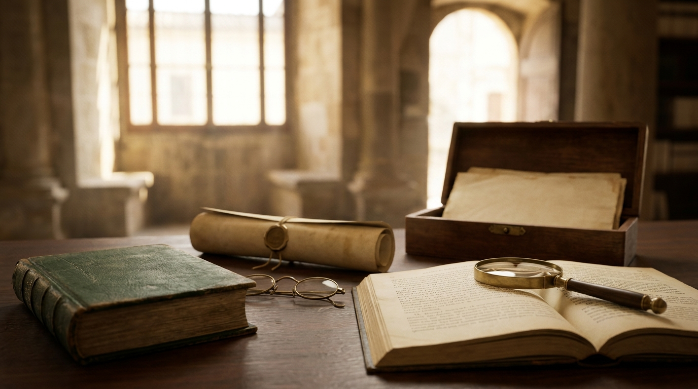

Vizi riconoscibili e autoresponsabilità del compratore: i limiti alla garanzia
Una recente pronuncia del Tribunale di Grosseto ribadisce un principio spesso trascurato: chi compra ha l'onere di una verifica minima. Se il difetto della cosa era facilmente riconoscibile, la garanzia per vizi non scatta. È il principio di autoresponsabilità, che sposta sul compratore le conseguenze dei controlli omessi.

Il caso e il principio affermato
Il Tribunale di Grosseto è tornato su un nodo classico della compravendita: la distinzione tra vizi occulti e vizi riconoscibili. La regola è netta. Il venditore risponde dei difetti della cosa, ma non di quelli che il compratore avrebbe potuto rilevare con una verifica ordinaria.
In altre parole, la tutela non premia la disattenzione. Chi acquista deve esercitare una diligenza minima. Quando il difetto è palese o agevolmente percepibile, l'omesso controllo ricade su chi compra. È il cuore del principio di autoresponsabilità.
Inquadramento normativo
Il riferimento è agli articoli 1490 e seguenti del Codice civile. L'art. 1491 c.c. esclude la garanzia quando, al momento del contratto, il compratore conosceva i vizi della cosa oppure questi erano facilmente riconoscibili. Fa eccezione l'ipotesi in cui il venditore abbia dichiarato che la cosa era esente da vizi: in tal caso la garanzia opera anche per i difetti riconoscibili.
L'art. 1492 c.c. disciplina gli effetti della garanzia, riconoscendo al compratore la scelta tra la risoluzione del contratto (*azione redibitoria*) e la riduzione del prezzo (*azione estimatoria*). L'art. 1494 c.c. aggiunge il diritto al risarcimento del danno, salvo che il venditore provi di aver ignorato senza colpa i vizi.
Il concetto di "facile riconoscibilità" non è astratto. Va misurato sulle circostanze concrete: natura del bene, modalità della vendita, competenze esigibili dal compratore in quella specifica operazione. Un difetto evidente a un occhio mediamente attento non gode di protezione; un difetto che richiede indagini tecniche specialistiche resta coperto dalla garanzia.
Cosa cambia per chi compra e per chi vende
Per il compratore il messaggio è diretto: la verifica del bene non è una facoltà, ma un onere con conseguenze giuridiche. Saltare un controllo basilare significa rinunciare, di fatto, alla possibilità di contestare il difetto in un secondo momento.
Per il venditore vale il principio speculare. La riconoscibilità del vizio è una linea di difesa solida, ma fragile se nel contratto o nelle trattative ha rilasciato dichiarazioni di assenza di difetti. Una rassicurazione scritta o anche solo provata può riaprire la garanzia anche su difetti altrimenti palesi.
La distinzione incide poi sui termini. La garanzia per vizi è soggetta a decadenza e prescrizione brevi: la denuncia va proposta entro otto giorni dalla scoperta, salvo diversa pattuizione, e l'azione si prescrive in un anno dalla consegna. Confondere un vizio riconoscibile con uno occulto può portare a perdere l'azione per ragioni puramente formali.
Cosa fare in concreto
- Ispeziona il bene prima di firmare. Documenta lo stato della cosa con foto, video o un verbale di consegna controfirmato. La prova della condizione iniziale è decisiva.
- Pretendi dichiarazioni esplicite. Se il bene deve essere esente da specifici difetti, fai inserire una clausola di garanzia espressa nel contratto: copre anche i vizi riconoscibili.
- Distingui ciò che è verificabile da ciò che non lo è. Per beni complessi, richiedi una perizia tecnica indipendente prima dell'acquisto. Spostarne il costo sul venditore è spesso oggetto di trattativa.
- Rispetta i termini di denuncia. Appena scoperto il vizio, invia comunicazione scritta entro otto giorni, con prova di ricezione. Non attendere.
- Valuta l'azione corretta. Risoluzione o riduzione del prezzo rispondono a logiche diverse. Consigliamo di definire la strategia prima di formalizzare la contestazione, perché la scelta condiziona l'esito.
Una nota di metodo
La pronuncia del Tribunale di Grosseto non introduce un principio nuovo, ma ne riafferma il rigore applicativo. La garanzia per vizi tutela chi agisce con ordinaria diligenza, non chi delega ogni controllo alla buona fede della controparte. In sede contrattuale, prevenzione e documentazione valgono più di qualsiasi contestazione successiva.
Nelle operazioni di valore o tecnicamente articolate, una verifica preliminare delle clausole di garanzia e dello stato del bene riduce in modo sensibile il rischio di contenzioso.
Contributo informativo a cura di Tamburro & Partners - Avv. Giuseppe Tamburro. Non costituisce parere legale.
Ogni contratto ha il suo equilibrio.
Se vuoi una revisione delle clausole o una redazione su misura, scrivi allo studio. Ti rispondiamo entro un giorno lavorativo.